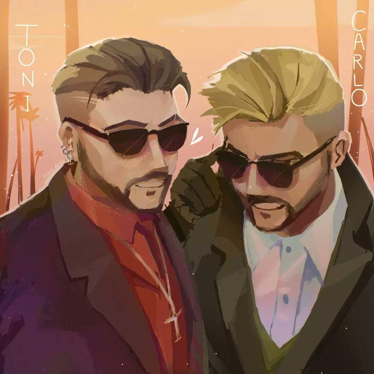

El apellido Gambino estuvo sonando en toda la ciudad de Marbella Vice,por cada uno de los rincones ¿por qué de la nada este apellido de la noche a la mañana estuvo en la boca de toda Marbella Vice?

Los hermanos Gambino llegaron a la ciudad de Marbella en el 2021 , con el unico fin de vender su droga y tener buenos contratos de armas,pero si se sabe que estan metidos en cosas raras ¿por qué no tienen antecedentes? Esto fue obra del Comisario David Gordon, el cual cada que ellos eran capturados en fragante delito les limpiaba el historial completo,con el unico precio de ganarse un porcentaje de sus ventas al igual que Raúl Salinas (el Abogado de los Gambino) el que ayudaba con el lavado de dinero con el mismo precio que el Comisario ,un porcentaje de las ganancias que sacara del lavado de dinero. Tras el pasar de los meses Los Gambino hicieron historia en Marbella Vice robando el banco central teniendo una buena huida de la ciudad, a Toni Gambino lo agarraron, pero a la media hora lo rescataron y huyeron de la ciudad yendo a un paradero desconocido.
El operativo policial logro abatir a dos miembros de la organización (Anya Tarasova y Fedor Chernyshev ambos con nacionalidad Rusa), Mientras que a Raúl Salina fue condenado a cadena perpetua por corrupcion y David Gordo quedo en busqueda y captura al desaparecer con su mujer sin dejar rastro alguno desde el 2021.
mensaje breve para los Gambino
"Queridos Carlo y Toni Gambino no se descuiden,les estamos pisando los talones. cuidense mucho y ojo con la gente en quien confian. att: LA C.I.A"